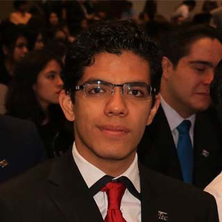

Conoce al Equipo

Rafael Rojas
Estudia: Ingeniería en Tecnologías Computacionales
Interesado en ciencias de la computación y análisis de algoritmos, desarrollo móvil, desarrollo full stack de aplicaciones web, computación cuántica.
Diana Cruz
Estudia: Ingeniería Industrial y de Sistemas
Interesada en la industria Farmacéutica, la cual se dedica al descubrimiento, desarrollo, fabricación y la comercialización de medicamentos para la preservación y conservación de la población humana.
Sara Fresán
Estudia: Ingeniería Industrial y de Sistemas
Interesada en la industria o sector energético, la cual se relaciona con la producción o el suministro de energía. Incluye la energía fósil y la energía sustentable.

Rodolfo López
Estudia: Ingeniería Mecánica Eléctrica
Interesado en sistemas de manufactura, desarrollo de procesos de manufactura para la fabricación de chasises y equipos hidráulicos e implementación de equipos CNC.

Diego Aguilar
Estudia: Ingeniería en Tecnologías Computacionales
Interesado en ciencias de la computación, análisis y ciencia de datos, la cual se relaciona con la interpretación de los datos para poder generar predicciones, cálculos que permitan una mejora continua, así como para poder ver áreas de oportunidad de la industria en la que se realiza el análisis.
Daniel Aviña
Estudia: Ingeniería en Desarrollo Sustentable
Interesado en certificaciones de sustentabilidad, eficiencia energética en edificios, simulaciones térmicas y energéticas, gestión sostenible del medio ambiente, acústica arquitectónica y medioambiental.
Información complentaria por carrera:
IIS - Ingeniería Industrial y de sistemas
Perfil del egresadoEl programa de Ingeniero Industrial y de Sistemas tiene como objetivo formar profesionistas que resuelvan problemas complejos en todo tipo de organización; para mejorar, optimizar e innovar procesos y sistemas para que sean sustentables. Se distingue por liderar procesos de cambio en un entorno globalizado y dinámico; y ser capaz de integrar herramientas metodológicas para incrementar la productividad y competitividad, aplicando la gestión de proyectos, la modelación matemática, el uso herramientas analíticas y métodos estadísticos; así como la utilización de tecnologías de información.
Competencias- Innova procesos organizacionales con una visión sistémica y de sustentabilidad.
- Genera soluciones integrales a problemas complejos aplicando metodologías de visión sistémica y enfoque participativo.
- Administra proyectos multidisciplinarios integrando los aspectos técnicos, económicos y de mercado, alineados con los objetivos organizacionales.
- Toma decisiones integrales en procesos con abundancia de datos, utilizando herramientas estadísticas avanzadas.
- Mejora la competitividad de los sistemas y procesos clave en las organizaciones, implementando metodologías de calidad, productividad y optimización.
ITC - Ingeniería en Tecnologías Computacionales
Perfil del egresadoEl Ingeniero en Tecnologías Computacionales tiene como objetivo responder al avance de la sociedad al desarrollar sistemas de software que dan soporte a la innovación tecnológica para mejorar la calidad de vida de la sociedad, aumentar la competitividad de las organizaciones y apoyar el desarrollo sustentable del país. Genera productos tecnológicos que impulsan la solución de problemas en ámbitos cotidianos, científicos e industriales y en los que integra competencias y habilidades de las Ciencias Computacionales, la Ingeniería de Software y la Infraestructura Computacional. Sus fortalezas comprenden el análisis, diseño e implementación de algoritmos, la modelación computacional, los sistemas inteligentes, el desarrollo de software y la implantación de redes computacionales.
Competencias- Soluciona problemas generando algoritmos computacionales eficientes bajo modelos y herramientas de las ciencias computacionales.
- Desarrolla software aplicando estándares de procesos y de calidad de la Ingeniería de software.
- Implementa infraestructura computacional de vanguardia que satisface necesidades de interconexión, operación y seguridad informática.
IDS - Ingeniería en Desarrollo Sustentable
Perfil del egresadoLa carrera de Ingeniero en Desarrollo Sustentable tiene como objetivos educativos la formación de profesionistas que:
- Se desempeñen con éxito en áreas de energía, uso eficiente de materiales o uso sustentable de recursos naturales.
- Cuenten con una cultura de actualización profesional permanente que les permite desarrollarse en las áreas de energía, uso eficiente de materiales, uso sustentable de recursos naturales o áreas relacionadas.
- Sean socialmente responsables e íntegros y que participen en organizaciones o realizando actividades que contribuyan al desarrollo sustentable.
- Respeten a las personas y su entorno, y tomen sus decisiones basándose en criterios éticos.
- Cuenten con iniciativa y capacidad emprendedora para identificar y desarrollar oportunidades de negocio en el área de energía, uso eficiente de materiales y uso sustentable de recursos naturales.
IME - Ingeniería Mecánica Electricista
Perfil del egresadoLa carrera de Ingeniero Mecánico Electricista tiene como objetivos educativos la formación de profesionistas que:
- Se desempeñen con éxito realizando proyectos relacionados con las áreas de diseño, materiales, manufactura, mecánica, ciencias térmicas, energía e ingeniería eléctrica, en la industria aeroespacial y del transporte o en los sectores energético o manufacturero.
- Lideren la realización de proyectos de las áreas de Ingeniería Mecánica y Eléctrica, que beneficien a la sociedad.
- Cuenten con una cultura de actualización profesional permanente.
- Innoven, con sentido de responsabilidad hacia el cuidado del medio ambiente, contribuyendo a la generación de nuevo conocimiento y trabajando con equipos multidisciplinarios en el desarrollo de productos que satisfacen necesidades humanas, y ayuden en la solución de problemas que afectan a la comunidad internacional, particularmente en el área de energía.
- Cuenten con una visión empresarial y/o desarrollen y creen nuevas empresas.
- Cuenten con una visión internacional de la sociedad y con capacidad de adaptación a otras culturas.
Referencias:
- ITESM, “IDS Perfil del Egresado”, 2011. https://samp.itesm.mx/Programas/VistaPrograma?clave=IDS11&modoVista=Areas&idioma=ES&cols=0 (consultado nov. 17, 2021).
- ITESM, “IIS Perfil del Egresado”, 2011. https://samp.itesm.mx/Programas/VistaPrograma?clave=IIS11&modoVista=Areas&idioma=ES&cols=0 (consultado nov. 17, 2021).
- ITESM, “IME Perfil del Egresado”, 2011. https://samp.itesm.mx/Programas/VistaPrograma?clave=IME11&modoVista=Areas&idioma=ES&cols=0 (consultado nov. 17, 2021).
- ITESM, “ITC Perfil del Egresado”, 2019. https://samp.itesm.mx/Programas/VistaPrograma?clave=ITC19&modoVista=Default&idioma=ES&cols=0 (consultado nov. 17, 2021).